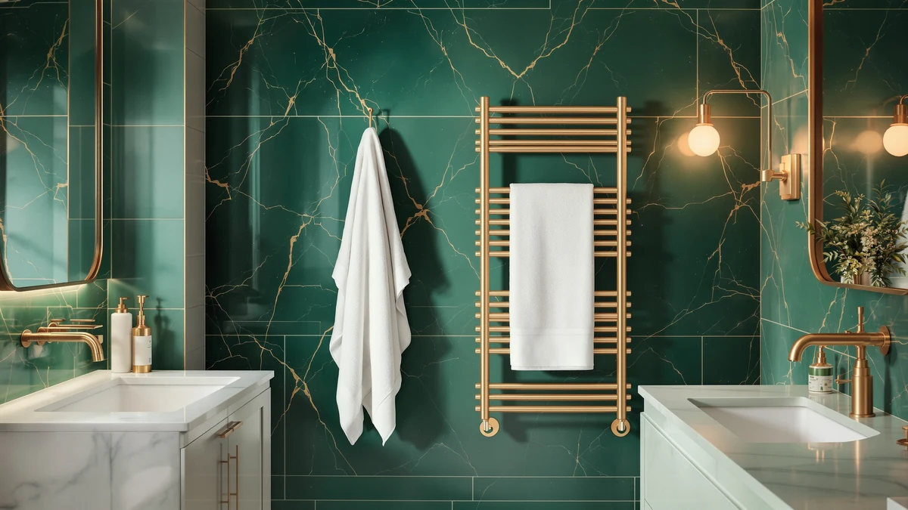

Artist hand Hot Towel Warmer Review (2026): Worth It?
Prices and picks verified as of November 2026. Independent, reader-supported reviews.


Quick Answer
The Artist hand Hot Towel Warmer is a 32-liter stainless steel cabinet built for spas and salons, heating up to 40 facial towels to 176°F in about 30 minutes rather than warming towels already hanging on a bathroom wall. If you only need a wall-mounted hot towel warmer for a home bathroom, the three lower-priced alternatives further down this review cover that instead.
Our pick: Artist hand Hot Towel Warmer, $179.99 Check Price on Amazon
Bottom line: our top pick is the Artist hand Hot Towel Warmer for Spa at $179.99.
Things to Know Before You Buy
- Cabinet versus rack changes what you're actually buying. The Artist hand heats a batch of up to 40 loose towels inside a 32-liter stainless steel cabinet, while the AquivaCoast, HEATGENE, and ENZE warm towels already hanging on wall-mounted bars.
- Heating speed varies by design. The Artist hand reaches 176°F in about 30 minutes for its full cabinet load, while the smaller bar racks reach their working temperature in 10 to 30 minutes depending on bar count and wattage.
- Price sits in a tight $175.99 to $189.99 band across all four towel warmers we compared, so capacity and installation style matter more here than cost.
- Installation differs by product. The Artist hand needs only an outlet, the AquivaCoast and HEATGENE can be hardwired or plugged in, and the ENZE mounts with four rotating arms and a swivel shelf.
- None of the four listings we compared show a public star rating or review count on Amazon, so we leaned on manufacturer specs and listing details rather than an aggregate score.
This Artist hand Hot Towel Warmer review breaks down whether the brand's 32-liter stainless steel cabinet is worth $179.99 against three lower-priced, wall-mounted alternatives we compared it with on capacity, heating speed, and installation. The Artist hand is built less like a bathroom accessory and more like spa equipment: its stainless steel interior and two heating racks are rated to warm up to 40 facial towels at once, reaching 176°F in about 30 minutes thanks to a copper circuit board and a thickened, rust-resistant shell.
A cabinet this size targets a specific buyer: a spa, salon, or barbershop running through towels all day, not a single household bathroom. We compared its listed capacity, heating time, and build materials against three wall-mounted racks, the AquivaCoast, the HEATGENE, and the ENZE, each of which warms towels already hanging on bars rather than a batch sitting inside a cabinet. What follows covers where the Artist hand's capacity earns its price and where a smaller, cheaper wall rack makes more sense for everyday home use.
Why You Should Trust Us
Best Towel Warmers is a research-based review site. We haven't personally plugged in the Artist hand cabinet or the three wall-mounted racks in this review, and we don't run a testing lab. Instead, we compare manufacturer specs, current Amazon pricing, and the details each listing provides, and we flag when a listing is missing information, like a star rating or review count, rather than filling in a number that isn't there. Ilane Tall researches bathroom and spa hardware for this site and keeps the pricing and specs in this Artist hand hot towel warmer review current as listings change.
Our Research Experience
We didn't physically heat up the Artist hand cabinet or the three alternatives for this review. What we did is pull the listed capacity, wattage, and heating times from each product page, cross-check current Amazon pricing, and compare build materials across all four listings side by side. For the Artist hand specifically, that meant confirming the 32-liter capacity and 176°F heating spec against the stated 30-minute warm-up time, then comparing that cabinet-style design with the bar-rack approach used by the AquivaCoast, HEATGENE, and ENZE. We ruled out listings with vague capacity or wattage claims in favor of ones where the manufacturer specs matched what the product title advertised, which is how all four products in this hot towel warmer review were chosen.
Overview & Specs
Before comparing the Artist hand against the three wall-mounted alternatives, here's a closer look at the specs behind this hot towel warmer review: the materials, the capacity, and the heating numbers listed on its own product page.

Artist hand Hot Towel Warmer
What we like
- 32-liter capacity heats up to 40 standard facial towels at once, per the manufacturer's spec
- Reaches a working temperature of 176°F in about 30 minutes, with two stainless steel racks for even heat circulation
- Copper circuit board and a rust-resistant stainless steel interior are built for repeated daily use
Flaws but not dealbreakers
- At $179.99, the 40-towel capacity is far more than a typical household bathroom needs
- Amazon's listing doesn't show a public star rating or review count for this ASIN
- The 32-liter cabinet takes up floor or counter space that a wall-mounted rack avoids entirely
| Material | Stainless steel |
| Size | 32L |
The Artist hand Hot Towel Warmer is a white stainless steel cabinet built around a 32-liter interior, large enough to hold up to 40 standard facial towels across two included racks. Those racks are positioned to let air circulate evenly through the stack, so towels near the bottom heat at close to the same rate as ones near the top, according to the manufacturer. A copper circuit board handles the heat conduction and dissipation, and the thickened outer shell, stainless interior walls, and ABS door frame are designed to resist the rust and moisture that come with hours of daily steam.
It reaches a working temperature of up to 176°F in about 30 minutes, which fits the pace of a spa or salon cycling towels between clients rather than a household warming one towel before a shower. The unit is EPA-certified and ships with secure packaging to prevent transport damage, per the listing. At $179.99, it costs about the same as the wall-mounted racks later in this hot towel warmer review, so the deciding factor is capacity and setting, not price.
What We Liked
Based on the specs we compared, the 32-liter capacity is what sets the Artist hand apart from every other towel warmer in this review. Most towel warmers on the market handle one to a dozen towels on wall bars, while this cabinet is rated for 40 at once, which matters for a business that can't afford to run out mid-shift. The two-rack design for even air circulation is a thoughtful detail that smaller bar racks don't need to solve, since a single bar heats evenly on its own. The copper circuit board and rust-resistant interior also suggest a build quality aimed at commercial wear rather than occasional home use, which fits the price when you consider the capacity behind it.
What Could Be Better
The clearest drawback is a mismatch between capacity and the typical buyer searching for a hot towel warmer. At $179.99, you're paying for 40-towel capacity that most households will never use, when a 4- to 10-bar wall rack covers a normal bathroom for a similar price. Amazon's current listing for this ASIN also doesn't show a public star rating or review count, which makes it harder to gauge buyer satisfaction next to the three alternatives below. The 32-liter cabinet needs floor or counter space that a wall-mounted rack doesn't require, so measure your available space before ordering if you're tight on room.
Who Is It For?
This cabinet fits a spa, salon, barbershop, or massage studio that goes through towels fast enough to justify heating 40 at a time. It's a good match if you want a steady rotating supply ready between clients rather than warming towels one at a time on a wall rack. It's a poor fit for a single-person household or a standard home bathroom, where the AquivaCoast, HEATGENE, or ENZE towel warmers further down this review cover the same basic need for a bathroom-sized space instead of a commercial one.
Alternatives to Consider
If the Artist hand's 32-liter commercial capacity is more than your bathroom needs, these three wall-mounted alternatives cover a 10-bar rack with smart timer controls, a compact 4-bar brushed steel option, and a WiFi-enabled rack with rotating arms, all pulled from the same towel warmer comparison. None of them match the Artist hand's volume, but each one solves the problem it doesn't: a normal bathroom wall instead of a commercial-sized cabinet.

Also Great
AquivaCoast Electric Heated Towel Rack
At $179.99, the same price as the Artist hand, the AquivaCoast trades cabinet capacity for a 10-bar wall rack with a 200W heating system that warms evenly in 10 to 15 minutes. It offers 8 timer settings between 1 and 8 hours and 5 temperature levels from 100°F to 140°F, plus IPX4 water resistance and ETL certification for a standard bathroom install.
$179.99
Check Price on Amazon
Best Value
HEATGENE Towel Warmer Heated Towel
At $175.99, the HEATGENE is the least expensive option in this review. Its 4-bar brushed 304 stainless steel design uses wide bar spacing and a 60W heating element that reaches 110°F in 15 minutes and its optimal 130°F in about 30 minutes. It installs hardwired or plugged in, which suits a smaller bathroom that doesn't need the Artist hand's commercial output.
$175.99
Check Price on Amazon
Premium Choice
ENZE Smart Rotating Heated Towel
At $189.99, the ENZE is the priciest alternative but the only one with smart features. Its 4 rotating arms and swivel shelf heat to 120°F in about 5 minutes using a 100W element, and WiFi connectivity through the Tuya app adds Alexa and Google Assistant voice control, which neither the Artist hand cabinet nor the other two racks offer.
$189.99
Check Price on AmazonFrequently Asked Questions
Is the Artist hand Hot Towel Warmer worth the $179.99 price?
It depends on where you plan to use it. The 32-liter cabinet heats up to 40 facial towels at once, which makes sense for a spa, salon, or barbershop that runs through towels all day, but that capacity is overkill for a single home bathroom. For home use, the AquivaCoast, HEATGENE, or ENZE racks further down this review cost about the same or less and fit a normal bathroom wall instead of a countertop or floor cabinet.
How many towels fit in the Artist hand's 32-liter hot towel warmer?
The manufacturer rates the stainless steel interior to hold up to 40 standard facial towels at once, split across two included racks that promote even air circulation. That's a different scale than the wall-mounted racks in this review, which typically hold 4 to 10 bath towels depending on bar count.
How does the Artist hand cabinet compare to a wall-mounted rack like the AquivaCoast or HEATGENE?
The Artist hand is a freestanding, plug-in cabinet built around volume. It heats dozens of towels to 176°F in about 30 minutes, while the AquivaCoast and HEATGENE are wall-mounted bar racks that warm the towels already hanging on them in 10 to 30 minutes. Bar racks save floor space and suit a single bathroom, while the cabinet style suits a business that needs a steady rotating supply.
Final Verdict
This Artist hand hot towel warmer review comes down to matching capacity to setting. The Artist hand Hot Towel Warmer's 32-liter cabinet and 40-towel capacity make it the strongest pick for a spa, salon, or barbershop that needs a steady, rotating supply of warm towels, but that same capacity makes it the wrong choice for a typical home bathroom. For home use, the AquivaCoast's 10-bar rack, the HEATGENE's budget-friendly 4-bar design, or the ENZE's smart rotating arms all cover a standard bathroom for a similar or lower price. For a commercial setting with the volume to match, Artist hand is the pick in this comparison.